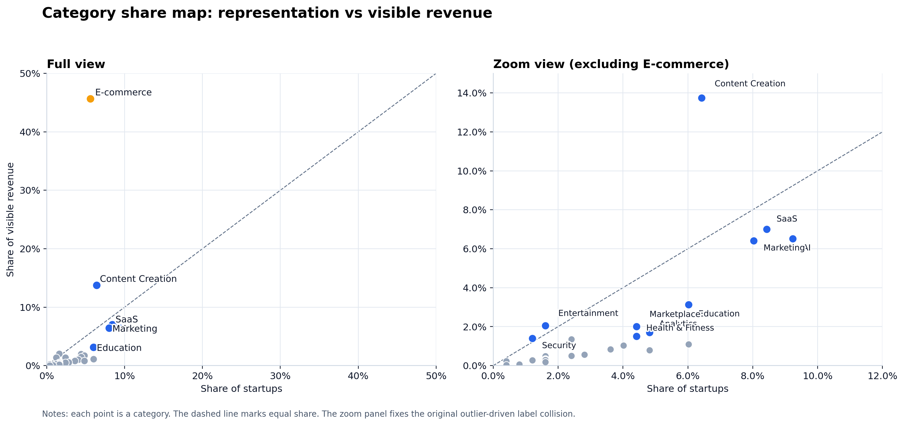
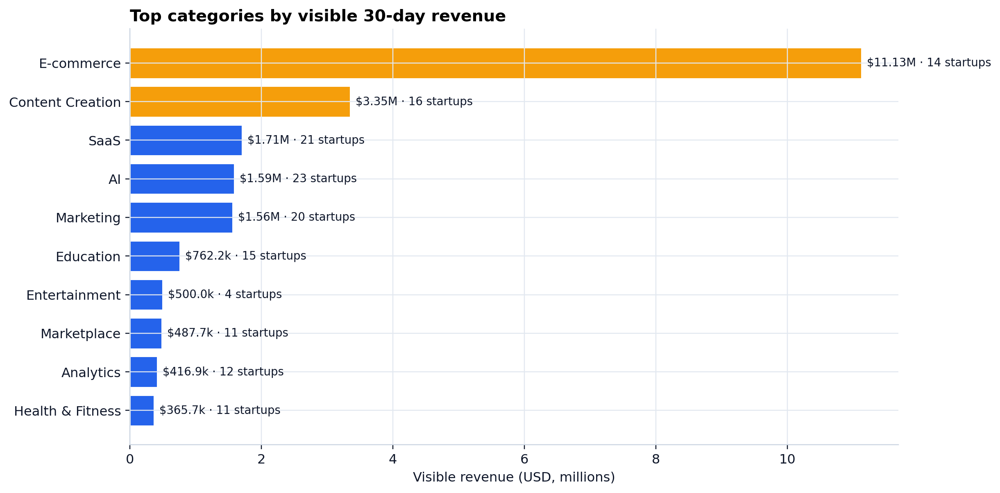
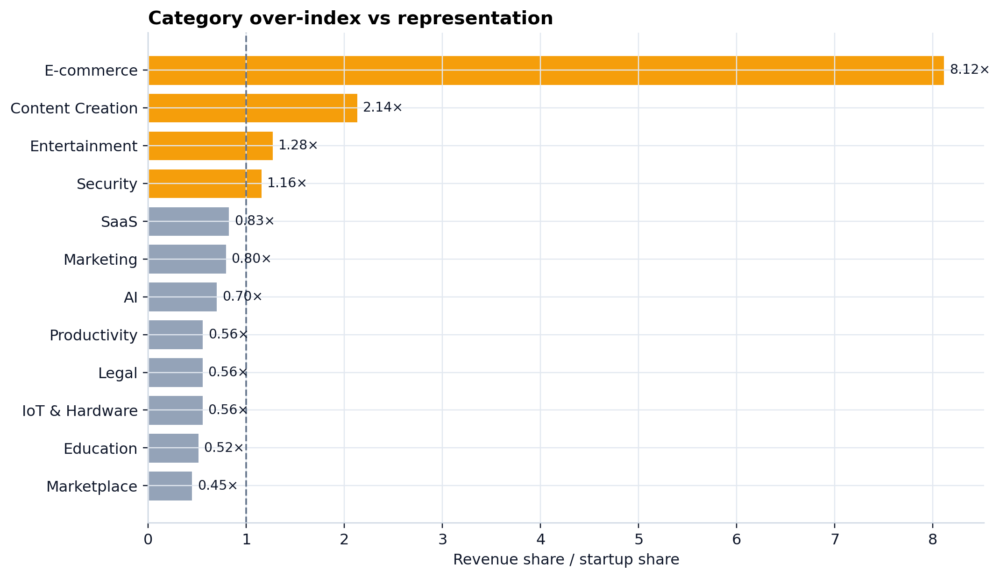
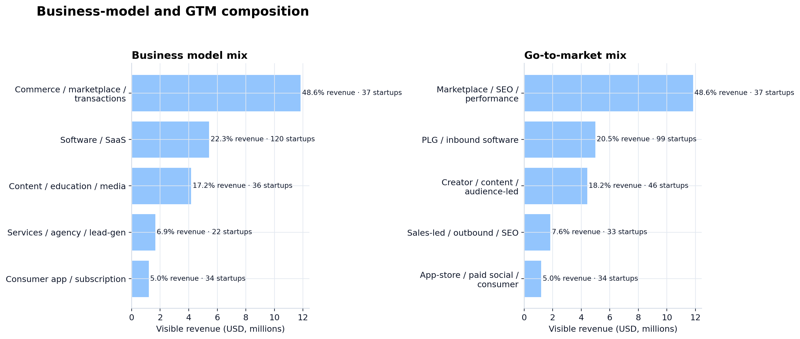
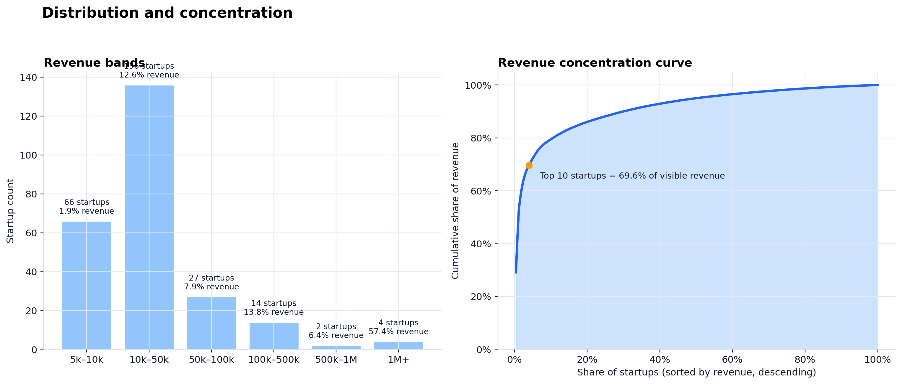

Visible 30-day revenue
$24.39M
Derived from the current visible sample only.
Press / or Ctrl+K to focus. Press Enter to jump. Use [ and ] to cycle local panels. Try /data, /data #downloads, or metrics.json.
Ready. 5 local panels and 22 global commands indexed.
Static GitHub Pages bundle
This operator surface packages the current processed TrustMRR visible sample into a dense, fully static Pages publication: summary metrics, charts, methodology, and machine-readable provenance live together with no runtime server.
Current build snapshot
249 startups
30 public source pages, deterministic charts, and validation manifests copied directly into the published site output.
OV.01
Top-line metrics and the current validation posture for the visible sample.
Visible 30-day revenue
$24.39M
Derived from the current visible sample only.
Median startup revenue
$17.0k
Half the visible sample is at or below this 30-day level.
Top-10 concentration
69.6%
The visible sample is highly top-heavy.
Dominant category
E-commerce
45.6% of visible revenue with 5.6% of startups.
OV.02
The site keeps the research caveat visible instead of hiding it behind repository docs.
A source-derived visible public sample built from public pages where Revenue (30d) >= $5,000.
Not a full platform export, not an official dataset, and not a claim of platform-wide coverage.
Validation status: Passed with warnings. Warning summary: 9 duplicate startup names.
OV.03
The published charts are copied into the site so GitHub Pages can serve the bundle directly.

Representation versus visible revenue share, with the outlier-safe zoom panel.
View SVG
The current sample is still dominated by E-commerce and Content Creation.
View SVG
Revenue share divided by startup share highlights which categories outperform their representation.
View SVG
Heuristic model labels show where visible revenue clusters by operating shape and acquisition motion.
View SVG
The visible sample is highly top-heavy, with a steep revenue concentration curve.
View SVGOV.04
The current sample is concentrated in a small number of categories, with E-commerce far ahead of the rest.
| Category | Visible revenue | Startup share | Revenue share | Performance index |
|---|---|---|---|---|
| E-commerce | $11.13M | 5.6% | 45.6% | 8.12x |
| Content Creation | $3.35M | 6.4% | 13.7% | 2.14x |
| SaaS | $1.71M | 8.4% | 7.0% | 0.83x |
| AI | $1.59M | 9.2% | 6.5% | 0.70x |
| Marketing | $1.56M | 8.0% | 6.4% | 0.80x |
| Education | $762.2k | 6.0% | 3.1% | 0.52x |
| Entertainment | $500.0k | 1.6% | 2.1% | 1.28x |
| Marketplace | $487.7k | 4.4% | 2.0% | 0.45x |
{kind=link}
{kind=link}
{kind=link}
{kind=link}
{kind=link}